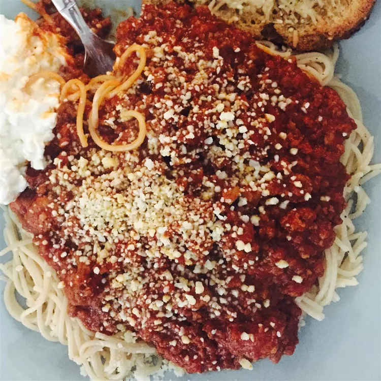

Old Italian Meat Sauce

Description
This Italian meat sauce with mushrooms is robust and hearty. Serve over your favorite pasta with Parmesan cheese if desired.
Ingridients
- 2 pounds lean ground beef
- 1 pound ground pork
- 2 tablespoons olive oil
- 2 onions, chopped
- 1 clove garlic, crushed
- 3 cups red wine, divided
- 2 pounds fresh mushrooms, sliced
- 4 tablespoons chopped fresh oregano
- ¼ teaspoon dried rosemary
- ¼ teaspoon chopped fresh thyme
- 3 (29 ounce) cans tomato sauce
- 1 (6 ounce) can tomato paste
Steps
- Heat a large skillet over medium heat. Cook beef and pork in the hot skillet until crumbly and no longer pink, 5 to 7 minutes. Remove from the heat and set aside.
- Warm olive oil in another large skillet over medium heat. Sauté onions and garlic in hot oil until onions are tender, about 5 minutes. Pour in 1/2 cup wine; mix well.
- Add mushrooms, oregano, rosemary, and thyme to onion mixture. Pour in another 1/2 cup wine; cook and stir until mushrooms are tender, about 5 minutes.
- Add browned meat, tomato sauce, and tomato paste to mushroom mixture. Reduce the heat and simmer for 1 hour.
- Pour in remaining 2 cups wine. Continue simmering for 2 to 3 hours, stirring occasionally; serve.